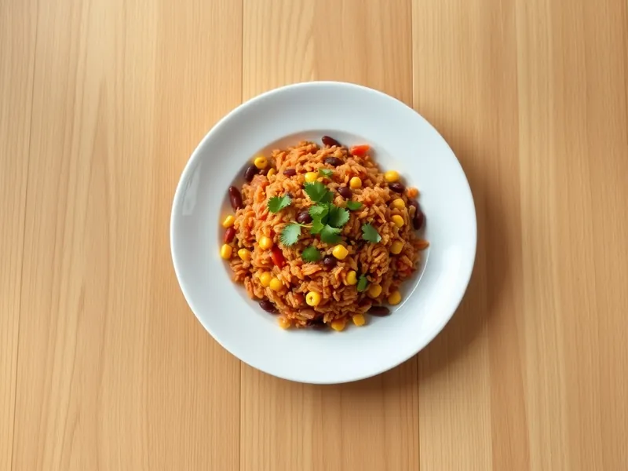

Фото: Иллюстрация ИИ, Cloudflare Workers AI
Рис по-мексикански с фасолью и кукурузой
Томатный рис с красной фасолью, кукурузой, перцем и зирой
30 мин4 порц.449 ккал на порциюБ 14 · Ж 9 · У 80Американская кухня
Продукты на 4 порц.
- Рис1,3 стак.
- Фасоль консервированная1 шт
- Кукуруза консервированная0,5 шт
- Перец болгарский1 шт
- Лук репчатый1 шт
- Томатная паста1,5 ст. л.
- Чеснок2 зуб.
- Зира1 ч. л.
- Паприка1 ч. л.
- Растительное масло2 ст. л.
- Вода2,75 стак.
- Соль2 ч. л.
- Кинза по желанию0,5 пучка
Как готовить
- Мелко нарежьте лук и чеснок, перец кубиками. Рис промойте. С фасоли и кукурузы слейте жидкость.
- Разогрейте масло на среднем огне и обжарьте лук с перцем 4 минуты. Добавьте чеснок, зиру и паприку, перемешайте 30 секунд.
- Всыпьте рис и обжаривайте 2 минуты, помешивая, пока зёрна не станут полупрозрачными.
- Добавьте томатную пасту, влейте горячую воду, посолите и перемешайте. Доведите до кипения, накройте крышкой и готовьте на слабом огне 15 минут.
- Выложите сверху фасоль и кукурузу, не перемешивая, накройте и готовьте ещё 5 минут, пока вода не впитается, а рис не станет мягким.
- Перемешайте вилкой и посыпьте кинзой.
Совет. Обжарка сухого риса в масле перед варкой не даёт зёрнам слипнуться даже с томатной пастой.